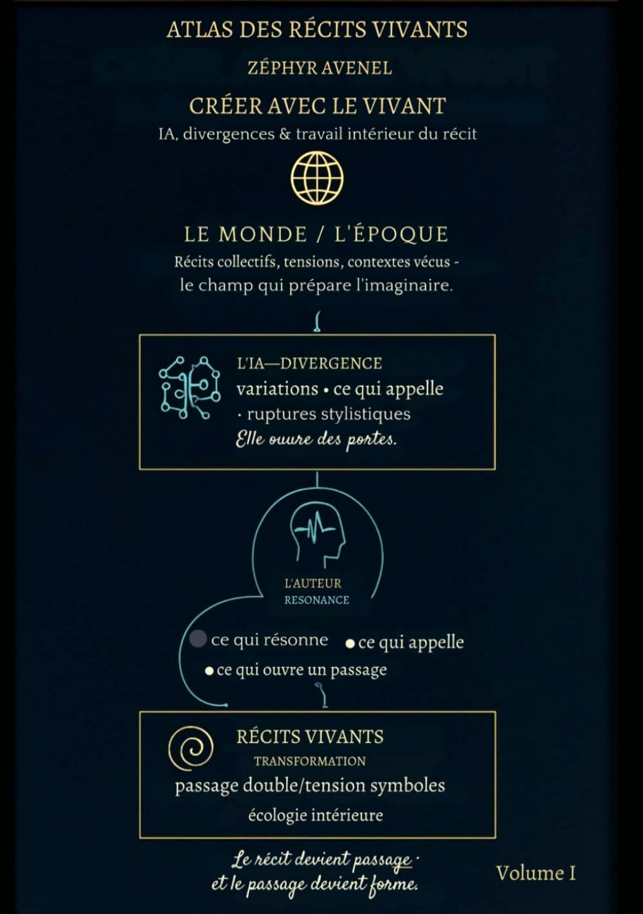

Atelier IA
Imaginer
Les images n'illustrent pas les recits ; elles leur ouvrent un paysage.
Cette galerie montre comment une atmosphere devient un seuil visuel. Chaque image retenue donne au visiteur une maniere d'entrer dans le monde.
Galerie des seuils

Avant / apres
Une belle illustration pour accompagner un texte.
Un paysage qui devient lui-meme une porte d'entree dans le recit.